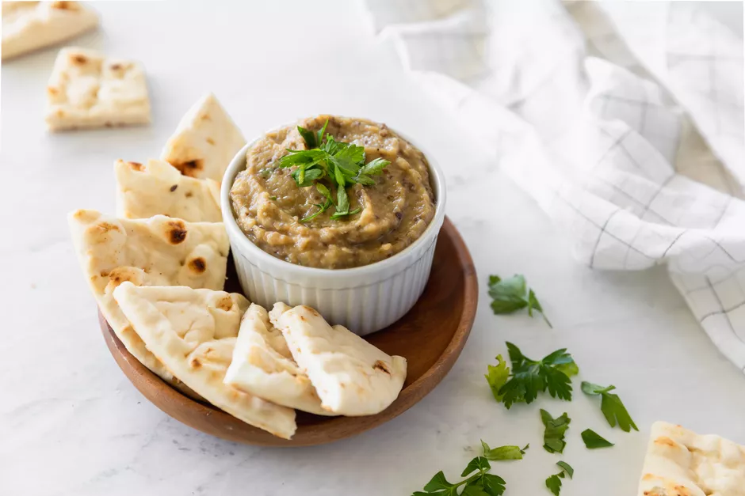

Baba Ghanoush

Baba Ghanoush: a creamy roasted eggplant dip!
Baba Ghanoush is usually served with a side of pita bread, but it is infinitely versatile.
Try using it as a spread on your favorite sandwich, or even with the Veggie Dolmas featured on our website!
The primary ingredient in this recipe, Eggplant, is roasted, giving this dish its signature smoky flavor. Baba Ghanoush, a Mediterranian and Middle Eastern dip, is normally made with tahini as one of the main ingredients.
This recipe, however, is sesame free!
Along with being sesame free, this recipe
is fat free and vegan.
Ingredients:
- 2 medium eggplants
- Olive oil, optional
- 2 tablespoons of lemon juice
- 1/2 teaspoon of finely chopped fresh parsley
- 1 teaspoon of onion powder
- 5 cloves of garlic, (preferably roasted) minced
Steps:
- Preheat the oven to 400 F
- Slice each of the eggplants in half and pierce with a fork several times.
- Drizzle the eggplants with olive oil and roast them for about 45 minutes, or until soft.
- Once soft, remove from the ovenm and allow to cool slightly. Scoop the inside of the eggplants into a food processor if you prefer a smooth texture. Discard the skin.
- Process eggplant with the remaining ingredients. If you prefer a chunky texture, feel free to use a fork to mash the ingredients together.
- Serve and enjoy!